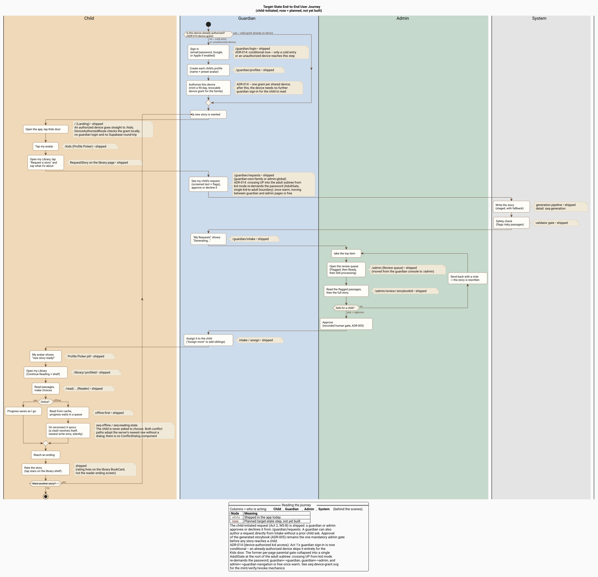
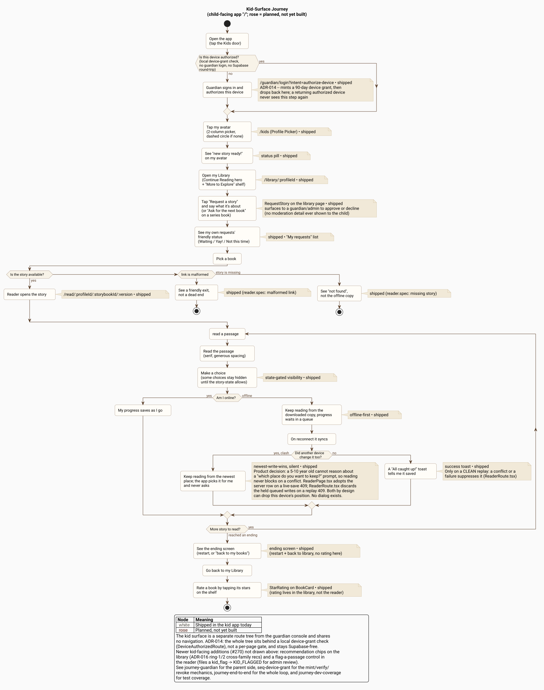
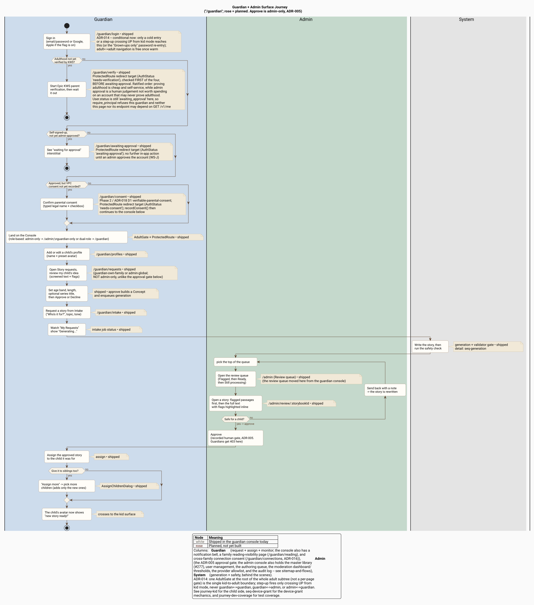
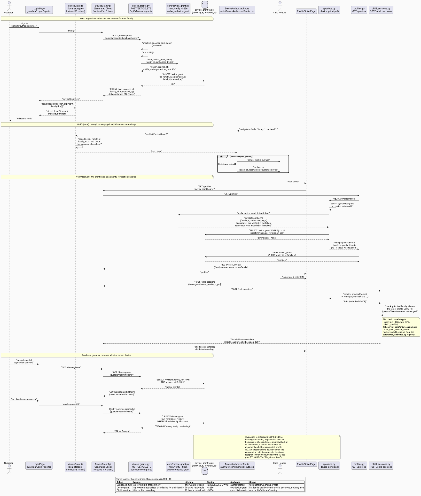
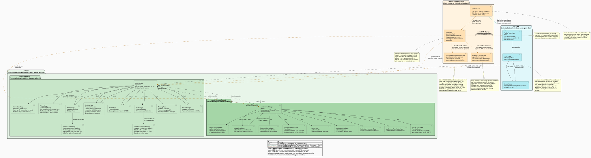
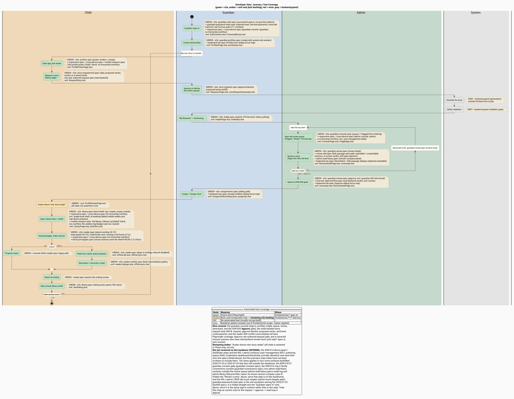

User Journeys
The other architecture diagrams describe how the system is built: containers, components, data model, and API sequences. This page describes what a person does, screen by screen, to get value from the app. It is a product/UX-clarity view, not an API sequence, so the boxes are user actions and user-facing waits rather than endpoints and database locks.
This page holds a set of journey diagrams that work together:
| Diagram | Use it for |
|---|---|
| End-to-end journey | The whole loop across all roles; onboarding a new contributor to the product |
| Kid-surface journey | Detailed child-facing flow; frontend work on the reader, library, and picker |
| Guardian + admin journey | Detailed parent-facing flow; request, approval gate, and assignment work |
| Device-grant sequence | Mint/verify/revoke mechanics behind the device grant; auth/security work |
| Sitemap and flows | Every route, its purpose, and the two auth-boundary crossings; navigation/routing work |
| Developer test-coverage view | Evaluating e2e/Playwright sufficiency; finding test gaps |
The three journey diagrams (end-to-end, kid, guardian) use the same swimlane convention and the same shipped/planned color language, so they read as one family. The device-grant sequence and sitemap are a different diagram shape (sequence, and nested-package component) covering the same ADR-014 material at a more mechanical altitude.
Target-state end-to-end journey¶

How to read it¶
- Columns are who is acting. The journey deliberately crosses four lanes:
the Child and Guardian each drive their own disjoint surface (the kid
app and the guardian console share no navigation; see
frontend/src/router.tsx), the Admin holds the mandatory approval gate, and System collapses the behind-the-scenes generation and safety work into user-facing waits. - Node fill marks maturity. White nodes are shipped in the app today. Rose nodes are planned target-state steps that are not yet built, so the diagram doubles as a gap map. The unbuilt steps line up with the gaps tracked in the R1 deployment review.
- Primary path is child-initiated. The diagram shows the intended future where a child asks for a story and the guardian approves the request. Today the entry point is reversed: a guardian starts requests from the Intake page. See the note under Act 2.
The journey, act by act¶
Each act below names the real screen or route it maps to and whether it is shipped or planned.
Act 1: Guardian onboarding (once)¶
A guardian signs in at /guardian/login (email/password or Google today; Apple
sign-in is gated behind a config flag) and creates a profile for each child at
/guardian/profiles. Profiles use preset illustrated avatars only, never
uploaded photos. This act runs once and sits outside the repeating story loop.
Device authorization (ADR-014). Sign-in is now conditional, not a step every
visit demands. The landing page (/) is device-state-aware: on a device that
already carries a valid, non-expired device grant, the Kids door goes straight to
/kids and the child never sees a guardian login at all. Only a cold entry (a
brand-new device) or an already-revoked/expired grant routes the Kids door
through /guardian/login?intent=authorize-device, where a guardian signing in
mints a 90-day, revocable, family-scoped device grant for that device and is then
dropped back to the kid picker. From then on that device needs no further
guardian sign-in for a child to read, online or offline. Post-login, a guardian
lands on /guardian, an admin-only adult on /admin, and a dual-role adult on
/guardian (with a one-hop link into /admin).
The single kid-to-adult boundary (ADR-014). The two former per-page
"Grown-ups only" gates collapsed into one AdultGate at the root of the whole
adult subtree, wrapping both /guardian and /admin. A signed-in adult
navigating guardian↔guardian, guardian↔admin, or admin↔guardian
never sees the password re-entry once warm (warm state lives in
sessionStorage, 5-minute TTL); the challenge fires only when crossing UP into
the adult subtree from kid mode, or on a cold session. See
seq-device-grant for the mint/verify/revoke
mechanics and sitemap-and-flows for the full
route map and the two boundary crossings (DeviceAuthorizedRoute, AdultGate).
{kind=link}
{kind=link}
Act 2: Requesting a story¶
Target state (primary path, planned): a child opens the kid app, taps their
avatar on the Profile Picker (/), taps "I want a new story," and says what it
is about. That request surfaces to the guardian, who approves or tweaks it.
Shipped today: the request is guardian-initiated. A guardian uses the Intake
page (/guardian/intake) with "Who's it for?" first, then a topic and tone,
then "Request Story." The child-tap entry point and the guardian
request-approval step (the two rose nodes in Act 2) are the not-yet-built delta
between these two flows.
Act 3: Behind the scenes¶
The system writes the story through a staged pipeline with a provider fallback cascade, then runs a deterministic safety check that flags risky passages. To the guardian this is just a "Generating..." status in their "My Requests" list. For the engineering detail behind this lane, see the generation sequence and the generation pipeline page.
{kind=link}
Act 4: The approval gate (ADR-005)¶
This is the single mandatory checkpoint before any story reaches a child. In the
Admin Console (/admin, the parallel adult surface for the admin capability),
the review queue is ordered Flagged, then Ready to review, then Still
processing. Opening a story (/admin/review/:id) surfaces its flagged passages
first, then the full text. The reviewer either approves or sends it
back with a note; a sent-back story is rewritten and re-enters the queue (the
inner loop in the diagram).
The approve action is the recorded human gate required by
ADR-005 and requires the
admin capability: a plain guardian cannot self-approve (the API returns 403).
One adult may hold both roles (guardian plus the is_admin capability) and
switches between /guardian and /admin via the shell nav. The diagram places
the whole review-and-approve sequence in the Admin lane to keep that gate
visually unambiguous.
Act 5: Assignment¶
An approved story is assigned to the child it was written for; "Assign more" widens it to siblings without re-requesting. On the kid surface, the child's avatar on the Profile Picker flips to a "new story ready!" status pill.
Act 6: Reading and rating¶
The child opens their Library (/library/:profileId), which leads with a
"Continue Reading" hero card and a shelf grid, then opens the Reader
(/read/:profileId/:storybookId/:version). They read passages and make
branching choices until they reach an ending. Reading is offline-first: if the
device is offline, the child reads from cache and progress waits in a queue,
syncing on reconnect and reconciling if it clashes (see
offline and reconnect and
reading-state sync for the mechanics). The
ending screen itself offers only restart and "back to my books"; rating lives
on the library shelf, where tapping a BookCard's stars upserts the rating.
Rating is shipped, not planned (an earlier draft of this page had it wrong).
{kind=link}
{kind=link}
Loop¶
Wanting another story returns to the top of the loop (Act 2). Guardian onboarding in Act 1 is not repeated.
Shipped vs planned at a glance¶
| Journey step | Screen / route | Status |
|---|---|---|
| Guardian sign-in | /guardian/login |
Shipped |
| Create child profiles | /guardian/profiles |
Shipped |
| Child taps "I want a new story" | Profile Picker (/) |
Planned |
| Guardian approves the child's request | (new) | Planned |
| Generation + safety validation | generation pipeline | Shipped |
| Guardian-initiated request | /guardian/intake |
Shipped |
| Admin review + approve/send-back | /admin, /admin/review/:id |
Shipped |
| Assign / assign more | Intake / assign | Shipped |
| "New story ready!" pill | Profile Picker (/) |
Shipped |
| Library and Reader | /library/..., /read/... |
Shipped |
| Offline read + reconnect sync | Reader | Shipped |
| Rate a book | Library shelf (BookCard) |
Shipped |
Zoomed journeys (per surface)¶
The end-to-end diagram spans every role at one altitude. When working on a single surface, the zoomed diagrams carry more screen-level detail (error exits, the offline branch, the assignment sub-flow) without the cross-role noise.
Kid surface¶

The child-facing route tree (/kids, behind the landing page's Kids door). It
adds detail the master view omits: the device-authorization branch at entry
(ADR-014: an authorized device skips guardian login entirely; an unauthorized
one routes through /guardian/login?intent=authorize-device once, then never
again), the three-way "is the story available?" branch (a malformed link shows
a friendly exit, a missing story shows not-found rather than the offline copy),
the read-loop with its online/offline and 409-conflict branches, and rating as
a library-shelf action reached after the ending returns the child to their
books.
Guardian and admin surface¶

The parent-facing console (/guardian and /admin, both behind a single
AdultGate at the root of the adult subtree, ADR-014). It details the
request-and-approval pipeline: sign-in (now conditional: a cold session or a
step-up crossing UP from kid mode, never adult-to-adult navigation),
role-based landing (admin-only to /admin, guardian-only or dual-role to
/guardian), profile management, the Intake request with its "Generating..."
status, the review queue ordered Flagged then Ready then processing, the
approve/send-back revision loop, and the assign / "Assign more" sub-flow.
Approve is the admin-only ADR-005 gate.
Device authorization (ADR-014)¶

The mechanical sequence behind the journey-level device-authorization notes
above: minting a device grant (POST /v1/device-grants), the local (no
network round-trip) client-side check DeviceAuthorizedRoute performs on
every kid-surface page load, the backend verification and revocation check
that runs when the grant is actually used to mint a child session or list
profiles, and revocation (DELETE /v1/device-grants/{id}). See
ADR-014 for the
full three-token model.
Site map and flows (ADR-014)¶

Every route in the app, its purpose, and how the pages link to each other,
drawn as a nested-package component diagram (the same shape as
component-api-persistence) rather
than a swimlane journey. Three zones: the device-state-aware landing (/,
/guardian/login), the Kid zone (/kids, /library/:profileId,
/read/:profileId/:storybookId/:version, gated by DeviceAuthorizedRoute),
and the Adult zone (/guardian/* with /admin/* nested inside it, gated by
the single AdultGate). Solid arrows are ordinary in-zone navigation;
distinctly styled dashed arrows and notes mark the two auth-boundary
crossings (DeviceAuthorizedRoute at the landing-to-kid edge, AdultGate at
the landing-to-adult edge and on the kid-to-adult step-up). Read it
left-to-right within a zone and top-to-bottom across zones; the boundary
arrows are the only edges that cost a credential check.
{kind=link}
Developer view: test coverage¶

This is the same end-to-end backbone recolored by automated test coverage, so the journey doubles as a Playwright/e2e gap map. It is the diagram to consult when deciding what e2e tests to write next.
Deferred (2026-07-13): this diagram derives its backbone from
journey-end-to-end.pumland has not been re-synced for the ADR-014 device- authorization and single-AdultGate changes above. Its coverage coloring is still accurate for the steps it shows; only the not-yet-recolored device-grant and step-up-boundary steps are the gap. Refresh it alongside the next e2e coverage pass rather than as part of this diagram update.
- Green steps are exercised end-to-end by a Playwright spec under
frontend/e2e/. - Amber steps are built but only unit/component-tested (
frontend/src/**/*.test.tsx). Amber is the e2e backlog: shipped behavior with no browser-level test. - Red steps have no automated test at all; here they line up with the not-yet-built steps.
- Grey steps are backend work covered by pytest, out of frontend-e2e scope.
What the coverage view surfaces¶
- The kid surface is well covered end-to-end: reader (play-to-ending, offline read, state-gated choices, malformed/missing error states, tap-target and no-scroll a11y), library (hero, shelf, rating, empty, mobile), and sibling assignment all have Playwright specs.
- The guardian console is now e2e-covered too: sign-in, profile management,
intake, the review queue, review detail, the send-back revision loop, and the
ADR-005 Approve gate all have Playwright specs alongside their existing
Vitest coverage. Approve carries two layers: a mocked e2e test
(
guardian-review.spec.ts, including the guardian-403 fail-closed case) and a real-backend smoke test (e2e-real/approval-flow.spec.ts) that exercises the gate with zero mocks against a real FastAPI and Postgres stack. Run it withnpm run test:e2e:real(runbook:frontend/README.md). - The reader 409-conflict reconciliation path, once amber, now has a dedicated spec covering both reconciliation outcomes.
- One residual gap: the offline-queue reconnect flush is untested because
it is unimplemented,
replayQueueis never invoked by app code. See issue #110.
| Former e2e gap | Covered by |
|---|---|
| Guardian successful sign-in | frontend/e2e/guardian-auth.spec.ts |
| Console review queue + ordering | frontend/e2e/guardian-console.spec.ts |
| Review detail + Approve (ADR-005) | frontend/e2e/guardian-review.spec.ts (+ e2e-real/approval-flow.spec.ts) |
| Send-back / revision loop | frontend/e2e/guardian-review.spec.ts |
| Intake request + job status | frontend/e2e/intake.spec.ts |
| Guardian profile management | frontend/e2e/guardian-profiles.spec.ts |
| Reader 409-conflict reconciliation | frontend/e2e/reader-conflict.spec.ts |
Related pages¶
- System Overview: the same three actors as C4 boxes rather than journey lanes.
- Validation and Player: the reader engine and offline sync that Act 6 rides on.
- Generation Pipeline: the System lane of Act 3 in full.
- ADR-014: Device-authorized kid access: the decision behind the device grant and the single AdultGate boundary.
- Data Model:
device_grant: the table backing the device grant. - Authorization Matrix: Device principal: the endpoint-level allowlist and IDOR test for the device token.